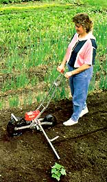

Years ago, many of the farming families had small push seed planters to use in the garden. Do you have any idea who makes these today, or is this something that has gone away?
Boyce Howell
Rogers, Arkansas
Earthway still makes a nifty seed planter that furrows, plants, covers the seeds and marks the next row, all in one pass. It comes with six seed plates for planting corn, peas, beans, carrots, beets and radishes. Five optional plates are available for other crops.
The Earthway seeder is available from hardware stores or by mail from Johnny's Selected Seeds (184 Foss Hill Road; Albion, ME 04910; (207) 437-4301; www.johnnyseeds.com ). The cost at our local hardware store was $64. For a distributor near you, contact Earthway at (219) 848-7491 or at www.earthway.com.
|
 The human-powered Earthway seed planter does several jobs in one. |
|
|